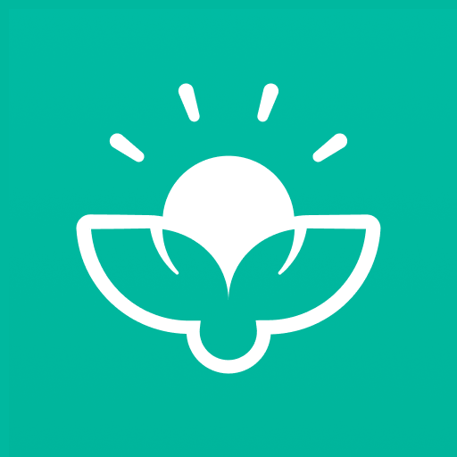

Gamified Sustainability
Small Steps.
Big Impact.
JouleBug makes sustainable living social and fun. By turning eco-friendly habits into a game, you can compete with friends, save money, and help the planet all at once.

What is JouleBug?
Your Sustainability Habit Tracker
JouleBug organizes sustainable tips into "Buzzes" that you log whenever you perform an eco-friendly action, while quantifying your real-world impact in CO2, waste, and money saved.
How To Use
Master Sustainability in 6 Steps
Browse Tips
Explore a wide library of simple sustainability "Buzzes" categorized by Energy, Water, and Waste.
Log Your Actions
Every time you perform an eco-friendly action, "Buzz" it in the app to earn points and badges.
Join Challenges
Enter local or global challenges to see how your sustainability score ranks against others.
Track Your Savings
Check your profile to see the real-world impact on your utility bills and carbon footprint.
Connect with Friends
Follow friends and family to stay motivated and see what sustainable habits they are adopting.
Level Up
Earn trophies and climb the leaderboard as you transition into a more sustainable lifestyle.
VIDEO TUTORIAL
See How JouleBug Works
App Capabilities
Core Features
Buzz Action Library
Hundreds of categorized eco-friendly actions across Energy, Water, Food, and Transport to log every day.
Leaderboards & Badges
Compete on local and global leaderboards and unlock achievement badges as your green habits grow.
Impact Dashboard
View a real-time breakdown of your CO2 savings, water usage reduced, and money saved from eco habits.
Social Challenges
Create or join group challenges with friends, coworkers, or your community to multiply your impact.
Benefits
Why Users Love JouleBug
Gamified Experience
Points and leaderboards make the transition to eco-friendly living feel like an achievement rather than a chore.
Cost Efficiency
Most sustainability tips are designed to reduce consumption, directly lowering your electricity and water bills.
Measurable Impact
The app uses scientific data to show the exact environmental benefits of your daily choices.
Evaluation
Pros & Cons
Pros
- Gamification makes building sustainable habits genuinely enjoyable.
- Quantifies your real-world savings in money, water, and CO2.
- Social and community challenges boost motivation and accountability.
- Great for schools and workplaces running sustainability programs.
Cons
- App updates and new content have slowed compared to earlier versions.
- The action library, while large, can feel repetitive over time.
- Relies on self-reporting, which requires personal honesty and discipline.
- Community size is smaller than mainstream social apps, limiting competition.
Verdict
Final Review
JouleBug is a clever and effective tool for turning good intentions into lasting eco-friendly habits. By attaching points, badges, and social competition to everyday green actions, it removes the friction that often prevents people from changing their behaviour. The real-world savings tracker is especially motivating, showing that sustainability is as good for your wallet as it is for the environment. While the app would benefit from more frequent content updates, it remains one of the best habit-building platforms for individuals and organisations committed to a greener lifestyle.